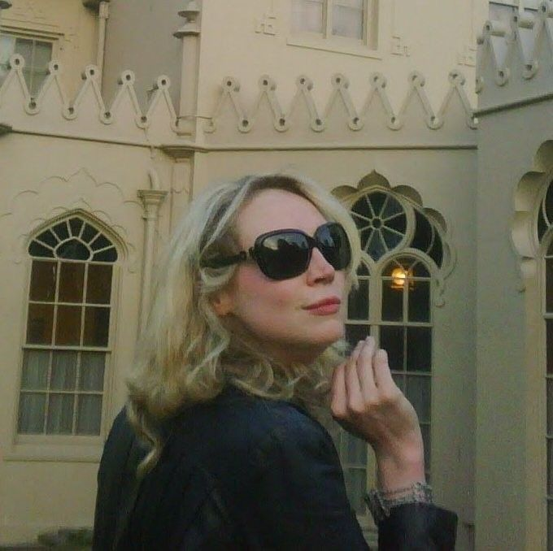
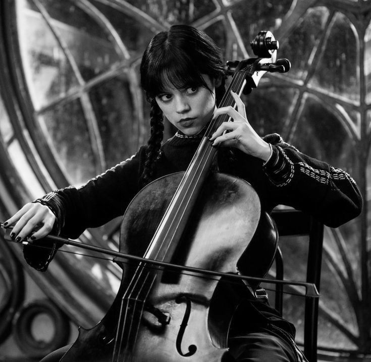
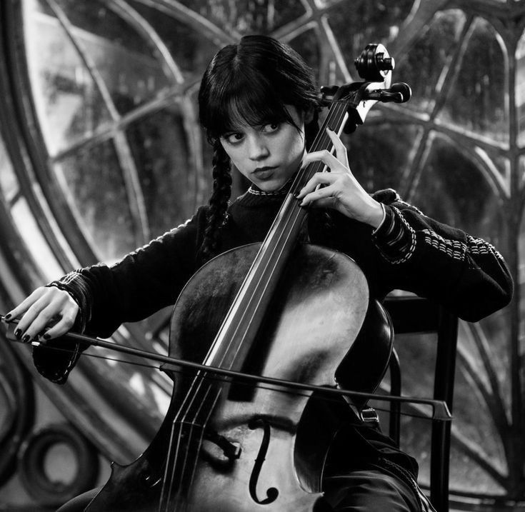

Jenna Ortega
Atriz,dubladora e escritora.
.jpeg)
Sobre Ela
Jenna Marie Ortega (Coachella Valley, 27 de setembro de 2002 é uma atriz norte-americana, mais conhecida por interpretar a protagonista Wandinha na série de mesmo nome, da Netflix, lançada em 2022. Iniciou sua carreira como atriz mirim, recebendo reconhecimento por interpretar a versão jovem de Jane na série de comédia dramática Jane the Virgin (2014–2019). Ela teve seu papel revelação como Harley Diaz na série Stuck in the Middle (2016–2018), pela qual ganhou um Imagen Award.[2] Em seguida, interpretou Ellie Alves na segunda temporada de You (2019) e atuou em Yes Day (2021). Ortega recebeu elogios da crítica por sua atuação no drama adolescente The Fallout (2021), e estrelou os filmes de terror The Babysitter: Killer Queen (2020), X e Scream (ambos de 2022), os quais estabeleceram-na como uma rainha do grito;por este último, ganhou o MTV Movie de Melhor Atuação Assustada. Ainda em 2022, recebeu o papel principal como Wednesday Addams na série Wednesday (2022), pela qual foi elogiada e indicada ao Globo de Ouro de 2023 na categoria de Atriz em série de comédia ou musical.
O Que os amigos da Jenna Ortega falam sobre ela.

Emma Myers sobre semelhanças com a sua personagem
“A Jenna tem muito da Wandinha, mas eu não sou como a Enid, então não temos a mesma dinâmica na vida real.
Gwendoline Christie sobre Wednesday
“Eu amo que 'Wandinha' é sobre ela mesma, uma jovem passando pela vida. Estamos vendo experiências da perspectiva dela, longe do convencional. E ela não tá nem aí, é ela mesma.
FOTOS


 
